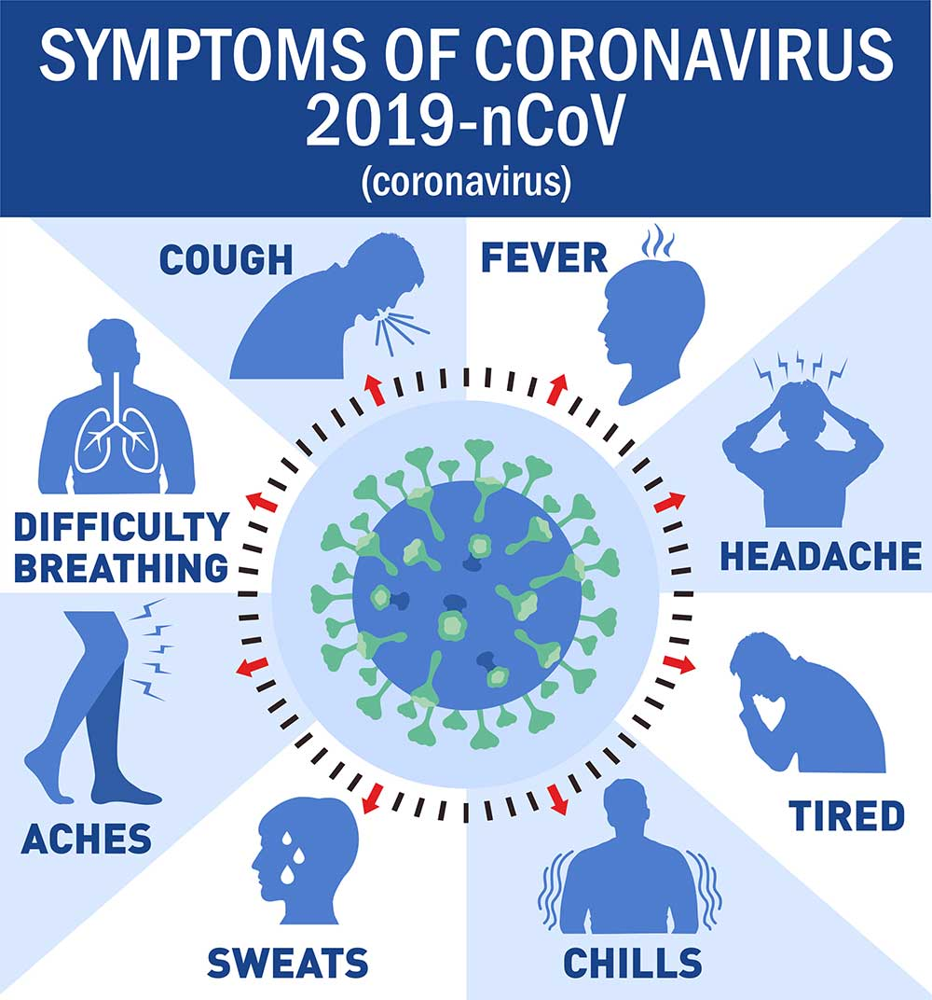
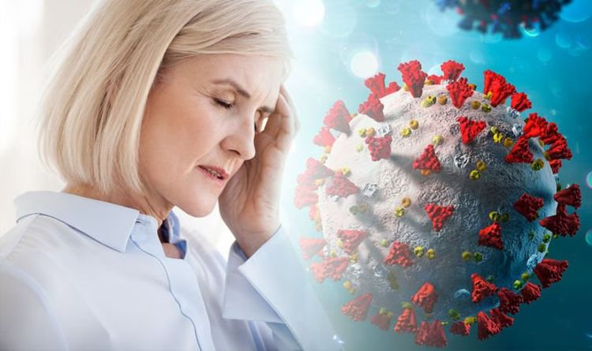

What type of illness is COVID-19?

COVID-19 is an infectious disease that was first learned about from Wuhan China in December 2019, hence the "19" in its name. This disease is caused by the coronavirus (SARS-CoV-2), a respiratory pathogen. The coronavirus has an incubation period of 14 days, meaning that symptoms would start appearing 1-14 days after being exposed to the virus. This is also why people are advised to stay at home and monitor themselves after going outside, in order tolessen the spread of the virus.
As said in the table above, it usually spreads through liquid particles (respiratory droplets or aerosols) in the air that usually vary in size. "Respiratory droplets" refers to mucus, saliva, and other bodily fluids from a person's respiratory tract, and these usually travel less than 6 feet (but may still stay on surfaces it lands on). Aerosols meanwhile, are smaller than respiratory droplets and they can spread farther through the air due to their small size.
Currently, there isn't a surefire treatment and vaccine created for the coronavirus; however, dexamethasone has been shown to help people with severe cases of coronavirus.
What's Dexamethasone?
Dexamethasone is a corticosteroid that doesn't have many short term side-effects and is considered generally safe. This is one of the reasons why the World Health Organization recommends it to be given to people with severe cases of the coronavirus. (Note: dexamethasone isn't recommended for patients with only mild or moderate cases of COVID-19, except if they are already taking it as medication for an existing health condition) Due to dexamethasone, mortality rates for patients needing a ventilator have been reduced by one-third, and mortality rates for people needing only oxygen-support have been reduced by one-fifth.
Symptoms of COVID-19
COVID-19 has an incubation period of 14 days, however, symptoms usually start appearing 5-6 days after being exposed to the virus. It is also possible that a person infected with the coronavirus won't show symptoms of COVID-19, and this is called being asymptomatic (Not to be confused with being pre-symptomatic). While both of these mean that a person shows no symptoms, being pre-symptomatic means that symptoms may eventually show up, while being asymptomatic means that the person never develops symptoms. It should be kept in mind that both of these are still infected, and may infect others.
Aside from the physical symptoms given in the table above, some symptoms of COVID-19 can manifest mentally. For example: anxiety, depression, and sleep disorders. In some cases, reduced consciousness is also a possible symptom. (this can sometimes be associated with seizures) Other more rare and severe symptoms include: neurological complications (strokes, brain infllamation, delirium, and nerve damage).
Given the aforementioned symptoms, anyone experiencing severe symptoms like chest pains, difficulty breathing, an extremely high temperature fever, etc. are advised to contact their local healthcare provider or seek medical assistance.
Types of COVID-19 Cases
There are two main types of COVID-19 cases, mild and severe. Most people (about 80% of COVID-19 cases) that get infected with the coronavirus recover without hospital treatment. Only 20% of cases actually end up needing hospital care (needing oxygen support and additional treatment), and 5% of cases need intensive care. Those that recover without hospital care usually only have mild symptoms, thus only needing to quarantine themselves at home and wait till they recover from the symptoms; these are mild cases. For severe cases, hospitalization is often requred in order for them to recover, though sometimes it may lead to death when treatment isn't enough (respiratory failure, and acute respiratory distress syndrome (ARDS) are some of the most common complications that lead to death). Although the coronavirus mainly affects the respiratory system, it can also have an effect on other organ systems; in fact, many of the deaths attributed to COVID-19 is also due to multi-organ failure and even sepsis and septic shock.
Who does COVID-19 affect?
As said in the table, anyone can be infected with the coronavirus. However, senior citizens (ages 60 up) and people with underlying health conditions are most at risk of getting severe cases of COVID-19. Examples of underlying health conditions are: high blood pressure, heart and/or lung complications, diabetes, obesity, and cancer. Even if a person isn't at serious risk of COVID-19, it is still important to follow social distancing and pandemic guidelines to lessen the spread of the coronavirus and to avoid becoming a carrier. This is also so that you won't accidentally infect or cause severe illness to more vulnerable members of the community.